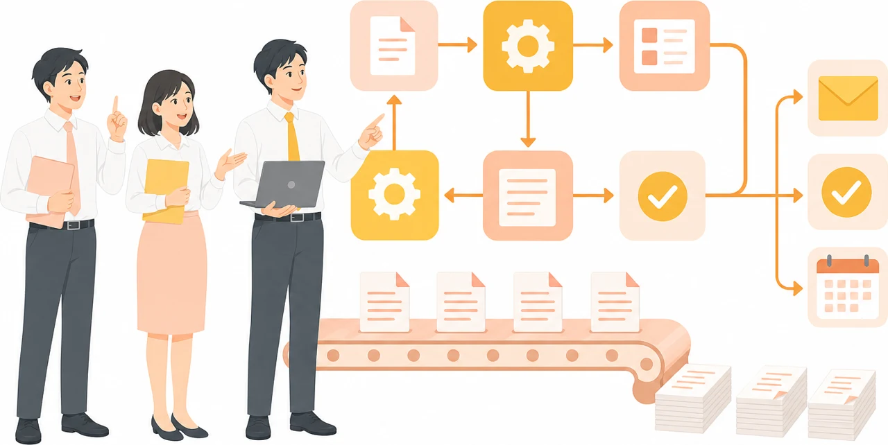

Power Automateと標準機能の公開事例を、数字の根拠とあわせて読む
Power Automate
活用事例集

UPDATE 2026.10
Contents

目次
掲載の16件は、公式発表の原文を2026年10月に確認したものです。
数字の読み方
16件の数字は、強さが違う。まず根拠の種類を見る
同じ「削減」でも、測り方によって意味が変わります。本資料では、各事例の数字に性質を付けています。
| 数字の性質 | どんな数字か | 該当する事例 | 読むときの注意 |
|---|---|---|---|
| 利用者の申告 | アンケートなどで利用者が答えた値 | 聖徳大学附属取手聖徳女子中学校・高等学校 | 回答者の値で、全社平均ではない |
| 推定（算出方法あり） | 調査や集計から算出した値 | Games Global | 計算の前提を確認する |
| 見込み・試算 | 仮定や初期の結果から見込んだ値 | Komatsu Australia | 実績として扱わない |
| 算定方法の記載なし | 公表はあるが、測り方の記載がない | 早稲田大学、富士フイルムビジネスイノベーション、渋谷区、AKKODiSコンサルティング、鹿島建設、US Acute Care Solutions、T-Mobile、Cineplex、Evergy、コスモ石油販売 | 参考値にとどめる |
| 規模・件数 | 人数、件数、作成数など | Coca-Cola Bottling Company United、Coop Norge、資生堂 | 効果の値ではない。進め方を参考にする |
数字の性質は、原文の記載をもとに当社が分類したものです。数値は各組織の公表値であり、当社による測定値ではありません。測定の条件が違うため、数字どうしの比較や合算はできません。出典は各事例のページに記載しています。
使い方の全体像
入口は承認と転記。基幹連携やRPAは次の段階
16件の使い方を5つに分けました。下に行くほど、ライセンスと運用の確認が必要になります。
| 使い方 | 具体例 | 主な事例 |
|---|---|---|
| 連絡・共有 | 店舗の連絡手段を統一、目的別チャネルで事前共有 | 資生堂、Coop Norge、コスモ石油販売 |
| 申請・承認 | 口座登録の電子化、予算承認の依頼、出張・休暇申請 | 早稲田大学、AKKODiSコンサルティング、聖徳大学附属取手聖徳女子 |
| 転記・帳票 | 営業帳票の起票、入金PDFの確認と回収 | 富士フイルムBI、渋谷区 |
| 現場入力 | 内装工事の進捗をスマホで報告し、管理表へ反映 | 鹿島建設 |
| 基幹連携・RPA | SAP請求処理、旧システムの同期、医療記録の整理、請求書の修正 | Coca-Cola United、T-Mobile、US Acute Care Solutions、Komatsu Australia |
分類は原文の記載をもとに当社が整理したものです。
共通する進め方
広がった組織が取り組む3つのこと
公開事例から読み取れる共通点です（当社の整理）。

小さな業務から始める
1つの業務や拠点で試し、形ができてから広げています。Komatsu Australia：1仕入先から
コスモ石油販売：九州で試験導入
Evergy：RPAから順に展開

作れる人を育てる
研修や推進役で、現場に作り手を増やしています。Games Global：2回の社内研修
渋谷区：DLS 68名
Coop Norge：推進役 約200人
現場が自分で直す
業務を知る人が作ることで、改善が続いています。早稲田大学：利用部門が内製
富士フイルムBI：現場主導
渋谷区：職員自身が自動化
数字で見る
全社の大きな数字は、小さな自動化の積み上げ
3組織の例です。全社の数字は複数の施策の合算で、Power Automate単体の効果ではありません。
Games Global
社内研修から生まれた自動化
年22,370時間
1回目5,434
合計22,370
2回の研修の合計です。Power AppsとCopilot Studioを含みます
Evergy
勤怠入力の改善と全社の施策
年120,000時間超
勤怠15,000超
全体120,000超
全体は275超の施策の合算で、Power Appsを含みます
Cineplex
返金の自動化と全社の施策
年30,000時間超
返金5,000
全体30,000超
全体は全施策の合算で、Copilot連携などを含みます
数値は各組織の公表値であり、当社による測定値ではありません。測定の条件が違うため、数字どうしの比較や合算はできません。出典は各事例のページに記載しています。
国内の事例
5件の取り組みと、公表された数字
国内の事例
国内は現場が自分で作る事例が中心
数字の性質を左から3列目に示しています。数字どうしは比較できません。
| No. | 組織 | 数字の性質 | 取り組み | 公表された数字 |
|---|---|---|---|---|
| 01 | 早稲田大学 | 算定法なし | 学外の口座登録を入力から基幹登録まで電子化 | 工数5〜6割削減（口座登録業務のみ） |
| 02 | 富士フイルムビジネスイノベーション | 算定法なし | 営業帳票の起票から入力、金型図面のデータ化まで | 帳票作成で年1万5,000時間削減可能（複数技術） |
| 03 | 渋谷区 | 算定法なし | 入金PDFの確認と回収をデスクトップフローで自動化 | 作業量年20時間程度軽減（当該業務のみ） |
| 04 | AKKODiSコンサルティング | 算定法なし | 予算承認の依頼と請求関連の流れを現場で改善 | 年15,800時間以上削減（複数フローの総計） |
| 05 | 鹿島建設 | 算定法なし | 内装工事の進捗をスマホ入力で管理表へ自動反映 | 歩掛十数〜二十数%向上（2020年・工種別） |
数値は各組織の公表値であり、当社による測定値ではありません。測定の条件が違うため、数字どうしの比較や合算はできません。出典は各事例のページに記載しています。
国内の事例
早稲田大学大学｜400超の業務を変革
作ったもの
電子署名で学外の方が口座情報を入力し、学内へ確認依頼
入力内容をSharePoint上のExcelへ保管
財務システムへの登録までPower Automateで実行
進め方
全職員向けトレーニングを制作して公開
Teamsのコミュニティで日常の教え合いを提供
基幹連携以外のフローは経理課の担当者が作成
業務工数の削減
5〜6割
口座登録業務のみ・担当者の説明
依頼から登録まで
20〜30分
同業務・従来は最短1週間
業務トランスフォーメーション
400超
2024年2月まで・全学の件数
中堅企業が取り入れるなら（当社の見解）
紙の受付をなくす
社外からの依頼を紙から電子入力へ替え、転記と紛失が起きる入口の工程から先に見直す。
基幹連携は情シスへ
現場は入力から保管までを作り、基幹への登録はIT部門が担う形で役割を明確に分ける。
待ち時間も測定する
作業工数だけでなく依頼から完了までの時間も測り、社外の相手に届く効果を確かめる。
出典：Microsoft「業務効率化のメジャー ツールに Power Automate を活用、わずか 2 年で 400 を超える業務トランスフォーメーションを実現、今後も「LCAP」に向けさらに前進」（公開日の記載なし・2024年2月までの実績を掲載）。数値は各社の公表値であり、当社による測定値ではありません。「取り入れるなら」は当社の見解です。
国内の事例
富士フイルムビジネスイノベーション製造・販売｜約7,600名のコミュニティ
作ったもの
営業帳票の作成をSQL Server・VBA・Power Appsで自動化
承認後の事務入力をPower Automateで処理
AI Builderで金型構造図をOCRし、社内DBへ自動登録
進め方
全部門のデジタル オフィサー200名以上が部門を主導
ガイダンスと教材を整え実践者コミュニティで助け合い
大阪支社で作ったツールを販売会社へ展開
帳票作成の自動化（営業）
1万5,000時間／年
削減可能と記載・Power Apps等が主
手入力の解消（事務）
2,000時間／年
削減可能と記載・Power Automate等
承認アプリを含む場合
1万8,000時間／年
試算・2024年4月に開発開始
データ化した金型構造図
約5万点
2024年1月完了・着手から3か月
中堅企業が取り入れるなら（当社の見解）
事務の手入力から
毎日発生する事務担当の入力を先に自動化し、効果を示してから営業の起票へ順に広げる。
様式別に学習させる
図面や帳票は様式ごとの記載パターンを学習させ、取り込んだ項目を検索に使えるようにする。
部門ごとに推進役
各部門に推進役を任命して中央部門が支え、活用の相談先を各部門の内側にも持たせる。
出典：Microsoft「200 名超のデジタル オフィサー体制でガバナンスの効いた DX の民主化を実現！ Microsoft Power Platform で約 7,600 人のコミュニティ メンバーが活躍する富士フイルムビジネスイノベーション」（制作当時 2024年7月）。数値は各社の公表値であり、当社による測定値ではありません。「取り入れるなら」は当社の見解です。
国内の事例
渋谷区自治体｜DLS 68名が各課で推進
作ったもの
公開フォルダのPDFから自課の記載を発見・回収・格納
Power Automate Desktopで作り日次実行だけに簡素化
相談アプリの登録でTeamsチャネルとタスクを自動作成
進め方
各課1名以上のDLSを自己推薦・所属長推薦で募集
初回研修は業務の全体像と改善点の考え方から
半期に一度のDLS MeetUpで事例を共有し表彰
作業量の軽減
20時間程度／年
入金確認の当該業務のみ
DLSの人数
68名
2024年度・各課1名以上
DLSから ICTセンターへの相談
120件
プロジェクト開始から1年間
中堅企業が取り入れるなら（当社の見解）
小さな反復を拾う
年20時間程度の作業でも対象にし、毎日の確認作業を職員の手から減らす例を増やす。
意欲で推進役を選ぶ
年齢や経験より本人の意欲を重視して任命し、各部署に改善の担い手を置く形にしていく。
成果発表の場を作る
半期ごとの発表会で経営層が担当者と話し、他部署でも真似できる事例を社内に広げる。
出典：Microsoft「部門横断の人財活用で業務システム開発を内製化。Microsoft Power Platform で効率化 DX を推進する渋谷区の取り組み」（公開日の記載なし・2024年度の情報を掲載）。数値は各社の公表値であり、当社による測定値ではありません。「取り入れるなら」は当社の見解です。
国内の事例
AKKODiSコンサルティングIT・コンサル｜6,500名規模で現場主導
作ったもの
予算作成ワークフローをPower Apps・Power Automateで構築
上司へ承認を促す作業を自動化
請求依頼の自動化や請求書の簡単な検索を実現
進め方
トップダウンでなく現場主導のモデルを採用
Power Platform・Copilotを組織全体に導入
営業から人事まで各部門が自ら解決策を構築
自動化による業務時間の削減
15,800時間以上／年
複数ワークフローの総計
上記の金額換算
約38万ドル
原文記載の換算値・総計
コンサルタントとエンジニア
6,500名
日本全国・公表時点
中堅企業が取り入れるなら（当社の見解）
督促を仕組みに渡す
承認の依頼や催促を担当者の仕事から外し、心理的な負担が大きい作業から自動化する。
現場の課題から選ぶ
業務に最も近い社員が課題を選び、IT部門任せにせず日常の小さな不便から解決する。
非開発者も作り手に
プログラミング経験のない社員にも開発を任せ、部門ごとに改善を進める体制を整えていく。
出典：Microsoft「AKKODiSはMicrosoft Power PlatformとCopilotを通じて、働き方を再定義し、企業カルチャーの変革を促進」（公開日の記載なし）。数値は各社の公表値であり、当社による測定値ではありません。「取り入れるなら」は当社の見解です。
国内の事例
鹿島建設建設｜横浜支店の多くの現場へ展開
作ったもの
スマホの工事完了報告アプリで階数・部屋名・工程を選択
Power AutomateでSharePoint上のExcel管理表へ反映
管理表を社員と協力会社の職方全員で共有
進め方
現場所長の進捗管理を効率化したいとの相談が起点
専門家でない社員がパートナーの助言を受けて開発
A4用紙1枚のマニュアルに収まる操作へ改良
LGS・ボード施工の歩掛
十数%向上
2020年10月時点・横浜支店の現場
クロス工事の歩掛
二十数%向上
2020年10月時点・横浜支店の現場
別現場への水平展開と準備
1〜2日程度
実質の作業量・開発者の説明
中堅企業が取り入れるなら（当社の見解）
選択式で入力させる
現場の入力はメニュー選択と送信だけにし、協力会社の人でも迷わない操作に絞り込む。
貼り出しをなくす
手書き、PC入力、印刷、掲示の流れを見直し、関係者全員が同じ表を見る形に替える。
意見を聞いて直す
試作を現場に使ってもらい、協力会社の声を反映しながら短い周期で改良を何度も繰り返す。
出典：Microsoft「建設業における DX とシチズンデベロッパーの実践 – 協力会社と進める Microsoft Power Platform とMicrosoft Teams の活用 –」（2020年10月）／Microsoft「Microsoft Teams 活用事例から学ぶ! 今すぐ使える機能別業務効率アップ術」（公開日の記載なし）。数値は各社の公表値であり、当社による測定値ではありません。「取り入れるなら」は当社の見解です。
海外の事例
7件の取り組みと、公表された数字
海外の事例
海外は基幹連携とRPAまで踏み込む
数字の性質を左から3列目に示しています。数字どうしは比較できません。
| No. | 組織 | 数字の性質 | 取り組み | 公表された数字 |
|---|---|---|---|---|
| 06 | Games Global | 推定 | 研修で承認・入退社・監査・報告を自動化 | 22,370時間／年（2回の研修の合計） |
| 07 | US Acute Care Solutions | 算定法なし | 年2,000万件の医療記録を収集・整理 | 10万時間超（年間か累計か原文で不一致） |
| 08 | Komatsu Australia | 見込み | PDF請求書の修正処理を無人RPA化 | 1仕入先で300時間／年の見込み |
| 09 | T-Mobile | 算定法なし | 合併先の旧システムとアプリをRPAで同期 | 処理時間12倍改善、誤り7%→0% |
数値は各組織の公表値であり、当社による測定値ではありません。測定の条件が違うため、数字どうしの比較や合算はできません。出典は各事例のページに記載しています。
海外の事例
Games Globalゲーム｜従業員1,000〜9,999人
作ったもの
当番・人事の承認をPower AppsとTeamsに集約
退職時のアカウント停止と入社時の権限付与を自動化
ISO・SOX監査のレビューと証跡、報告を自動化
進め方
数か月あけてIT Invest Weekを2回開催
Microsoftが研修し、3日目に各チームが構築
手順・時間・頻度を記録し、稼働後にIT部門が監査
年間の削減時間（合計）
22,370時間／年
2回の研修の合計。別製品を含む
1回目の研修の成果
5,434時間／年
1回目で作った自動化の年間値
規制報告の削減
430超時間／年
財務チーム。規制メールの自動化
未使用ライセンス回収
163,000ユーロ
退職処理の自動化に伴う回収額
中堅企業が取り入れるなら（当社の見解）
実業務で作る研修
研修の最終日を実業務の自動化に充てる。自分の仕事が題材なら、研修後すぐ使える成果が残る。
前後で時間を測る
手順、所要時間、頻度を事前に記録し、稼働後に見直す。削減時間の説明に根拠を持たせられる。
小さな成果で拡大
初回の成果を経営層に示し、次の研修の支持を得る。少しずつ自動化の範囲を広げていける。
出典：Microsoft「Games Global saves over 22,000 hours per year with Microsoft Power Platform and Copilot Studio」（2025年4月8日）。数値は各社の公表値であり、当社による測定値ではありません。「取り入れるなら」は当社の見解です。
海外の事例
US Acute Care Solutions医療・事務｜年2,000万件の記録処理
作ったもの
テキスト・画像・PDFの多様な記録を自動処理
正規表現で提供施設を判別、PDFはページ分割
処理後の記録を請求・アカウント管理の社内システムへ
進め方
人は異常の通知を受けた例外だけに対応
共通処理をモジュール化し施設ごとのフローで再利用
開発・テスト・本番を分離し、機密情報はKey Vaultで管理
削減した作業時間
100,000超時間
記事内で年間・累計の両記述あり
処理する記録
2,000万件／年
2022年公表。各施設の提供データ
担当チーム
5人
数百万件の処理を自動化した体制
対象の診療拠点
200拠点
USACSの診療拠点数
中堅企業が取り入れるなら（当社の見解）
例外だけ人が見る
通常処理は自動化し、人は失敗や異常の対応に回る。件数が増えても人手を増やさずに済む形を狙う。
処理を共通部品に
取引先ごとの差は変数で渡し、処理本体は一つにする。対象が増えても作り直しを減らせる。
環境を分けて運用
開発、テスト、本番を分けて管理する。個人情報を扱う業務では認証情報の保管方法も決めておく。
出典：Microsoft Power Platform Blog「US Acute Care Solutions automates processing of 20 million medical records annually using Power Automate (RPA)」（2022年8月26日）。数値は各社の公表値であり、当社による測定値ではありません。「取り入れるなら」は当社の見解です。
海外の事例
Komatsu Australia建機・部品｜1仕入先で先行
作ったもの
共有メールのPDF請求書を定期的に自動取得
AI Builderで抽出し、発注データと照合
デスクトップフローでAS400へ登録・処理
進め方
1社の地元仕入先を先行対象に選定
CoE Starter KitでROIと優先順位を可視化
第1期8人の市民開発者コミュニティを開始
効率化の見込み
300時間／年
1仕入先のみ。全社の値でない
自動化した請求書
1,200件
先行した1仕入先の分
購入から本番まで
4週間
ライセンス購入から無人RPA稼働
部品部門の請求書
52,000超件／年
全259社分。自動化済みの量でない
中堅企業が取り入れるなら（当社の見解）
1社に絞って始める
取引先や帳票を1つ選び、例外の傾向を掴む。その形を雛形にして残りの取引先へ広げていく。
古い基幹も対象に
APIのない基幹画面はデスクトップフローで操作する。既存の基幹を残したまま入力を自動化できる。
効果を一覧で示す
自動化ごとの効果を見える形にして経営層と共有する。次の候補の優先順位も決めやすくなる。
出典：Microsoft Power Platform Blog「Komatsu Australia accelerates hyper automation with Power Automate – from licensing to production in 4 weeks」（2022年6月30日）。数値は各社の公表値であり、当社による測定値ではありません。「取り入れるなら」は当社の見解です。
海外の事例
T-Mobile通信｜合併後のシステム連携
作ったもの
承認アプリOrbitとSprint側Quickbaseを同期
条件成立でクラウドフローがRPAを起動
旧システムのレコード更新・新規作成を自動化
進め方
最初にAPI連携を試すも、文書がなく断念
既存のクラウドフローの経験を土台にRPAへ転換
研修なしで動かし、数週間で展開
平均処理時間の改善
12倍
2023年公表。対象は本連携業務
入力エラー率
対象は本連携業務の手入力
処理できる要求数
11倍
リアルタイム処理。対象は本連携業務
削減時間
600時間／年
FTE時間。Microsoft公表の図表
中堅企業が取り入れるなら（当社の見解）
APIにこだわらない
API連携が難しい旧システムは画面操作の自動化を検討する。連携の検討段階で止まらずに済む。
手作業の遅れを測る
転記の遅れやエラー率を前後で比べる。処理時間だけでなく正確さも効果として説明できる。
既存の流れに足す
すでに使っているクラウドフローの続きにRPAを加える。作り直さずに自動化の範囲を広げられる。
出典：Microsoft Power Platform Blog「T-Mobile saves thousands of hours and achieves 12x gains in process efficiency with Power Platform」（2023年2月9日）、Microsoft Customer Stories「T-Mobile uses RPA in Power Automate to integrate systems during Sprint merger」（現在は公開終了。Web Archiveの保存版で確認）。数値は各社の公表値であり、当社による測定値ではありません。「取り入れるなら」は当社の見解です。
海外の事例
海外は基幹連携とRPAまで踏み込む
数字の性質を左から3列目に示しています。数字どうしは比較できません。
| No. | 組織 | 数字の性質 | 取り組み | 公表された数字 |
|---|---|---|---|---|
| 10 | Coca-Cola Bottling Company United | 規模・件数 | 11段階の受注・SAP請求処理を自動化 | 5万件超を処理（期間の記載なし） |
| 11 | Cineplex | 算定法なし | 財務・顧客対応の手処理を自動化 | 30,000時間超／年（全施策の合算） |
| 12 | Evergy | 算定法なし | RPAから現場・事務の業務へ展開 | 120,000時間超／年（275超の施策の合算） |
数値は各組織の公表値であり、当社による測定値ではありません。測定の条件が違うため、数字どうしの比較や合算はできません。出典は各事例のページに記載しています。
海外の事例
Coca-Cola Bottling Company United飲料｜Freestyle向けの受注
作ったもの
Freestyleカートリッジの受注から買掛までを自動化
ボットAsaがSAPで発注し仕入先サイトへ入力
請求メールを照合し、AI Builderで添付から抽出
進め方
API開発が高コストな箇所をRPAで補完
市民開発者・プロ開発者・パートナーの混成で構築
Azure上で無人実行し、Azure DevOpsで協業
自動化した受注
50,000超件
期間の記載なし。2022年公表
手作業だった工程
11段階
自動化前の受注・請求処理
他業務へ移れた担当
1人
専任のCRM担当者
手作業なら必要な人員
最大10人
試算。実際の削減人数でない
中堅企業が取り入れるなら（当社の見解）
工程を順に書き出す
受注から買掛まで手作業の工程を順に並べる。どこをつなぐと人の転記が消えるかが見えてくる。
APIとRPAの併用
API化の費用が大きい古い基幹や他社サイトはRPAで補う。すべてを作り直さずに連携できる。
社外と分担して作る
自社の開発者と外部パートナーで分担して進める。社内に知見を残しながら開発を前に進められる。
出典：Microsoft Power Platform Blog「Coca-Cola United automates over 50,000 orders in complex SAP invoicing process with Microsoft Power Platform」（2022年12月9日）、Microsoft Customer Stories「Coca-Cola Bottling Company United dispenses streamlined order management with RPA in Microsoft Power Automate」（現在は公開終了。Web Archiveの保存版で確認）。数値は各社の公表値であり、当社による測定値ではありません。「取り入れるなら」は当社の見解です。
海外の事例
Cineplex映画館・娯楽｜従業員10,000人超
作ったもの
メールの返金依頼を検証し処理する無人フロー
予約IDと日付で返金を進めるCopilot Studio連携
生成AIで請求書の品目を分類し州の売上税を判定
進め方
財務担当VPの小さな取り組みから全社へ拡大
自動化CoEを設置しPower BIで効果を把握
毎年8週間の社内大会Bot Battlesを開催
年間の削減時間
30,000超時間／年
2024年公表。400超の合算・AI含む
返金1件の対応時間
2024年公表。Copilot Studio連携後
返金の自動化
5,000時間／年
2024年公表。Copilot連携前の施策
開発者
100超人
2024年公表時点のメーカー数
中堅企業が取り入れるなら（当社の見解）
社内大会で案を集める
期間を区切った社内コンテストで、現場の業務から自動化の案と作り手を同時に見つける。
効果を一元管理する
自動化ごとの削減時間を集計画面にまとめ、優先順位の判断と経営への報告に使う。
既存フローを育てる
特定の返金処理のような狭い業務から始め、対象を広げてからAIの入口を足す。
出典：Microsoft「Cineplex saves 30,000 hours a year with Power Platform and generative AI」（2024年3月26日）。数値は各社の公表値であり、当社による測定値ではありません。「取り入れるなら」は当社の見解です。
海外の事例
Evergy電力｜顧客170万超
作ったもの
ドローン画像を移し結合処理を起動するRPA
勤怠を検証しERPへ入力するアプリとフロー
納品書PDFをAI Builderで抽出し人が確認
進め方
部門別にCoEを設置し、統制はITが一元管理
隔週のコミュニティと個別コーチングを実施
勤怠アプリは毎週進捗を見せ意見を反映
年間の削減時間
120,000超時間／年
2024年公表。275超の合算・Apps含む
勤怠入力の改善
15,000超時間／年
2024年公表。配電部門・Apps中心
納品書PDFの処理
5,600超時間／年
2024年公表。AI Builder活用の施策
画像の結合
3日→翌朝
ドローン点検のRPA。2024年公表
中堅企業が取り入れるなら（当社の見解）
部門ごとに窓口を置く
運用、顧客、財務などの部門単位に推進役を置き、セキュリティと統制はITで一元管理する。
RPAの限界を見る
入力ミスのように自動転記では直らない問題は、入力画面の検証を含めて作り直す。
毎週見せて信頼を得る
開発中の画面を毎週現場に見せて意見を反映し、完成後の利用定着につなげる。
出典：Microsoft「Public utility Evergy saves over 120,000 hours per year with Power Platform」（2024年3月20日）。数値は各社の公表値であり、当社による測定値ではありません。「取り入れるなら」は当社の見解です。
標準機能の事例
4件の取り組みと、公表された数字
標準機能の事例
追加の開発をせず、Teamsなど標準機能で変える
Power Automateを使わない事例も含みます。入力と連絡の電子化は、自動化の土台になります。
| No. | 組織 | 数字の性質 | 取り組み | 公表された数字 |
|---|---|---|---|---|
| 13 | 資生堂 | 規模・件数 | 店頭の美容職へFプランとTeamsを展開 | 約9,000人に展開。国内Teams3万人超 |
| 14 | Coop Norge | 規模・件数 | 店舗の連絡手段をTeamsへ統一 | 23,000人超へ展開（掲載時ほぼ完了） |
| 15 | コスモ石油販売 | 算定法なし | 目的別チャネルで店舗へ事前に情報共有 | 店舗のSV業務1時間→30分（九州で試験導入） |
| 16 | 聖徳大学附属取手聖徳女子中学校・高等学校 | 申告 | 教員自作アプリで出張・休暇申請を電子化 | 申請作業時間96%削減（算定方法の記載なし） |
数値は各組織の公表値であり、当社による測定値ではありません。測定の条件が違うため、数字どうしの比較や合算はできません。出典は各事例のページに記載しています。
標準機能の事例
資生堂化粧品｜美容職約9,000人が対象
使い方
Teamsでチャット・Web会議、Outlookで他部門へ直接連絡
旧チャットの掲示板やノートはForms・Power Appsで代替
Power Apps＋Power Automateで業務自体を自動化
進め方
Teams・Outlook・Authenticatorの3アプリから開始（2022年5月）
手順書は文字数85%減、1スライド1アクション、100回超改訂
幹部・管理職の動画メッセージで目的と戦略のつながりを発信
対象の美容職
9,000人（約）
全国のPBP。2024年1月公開の記事
国内のTeams利用者
30,000人超
PBPへの展開後の国内総数
会議の交通費・移動時間等
50%以上削減
大半のケース。担当者談で算定方法なし
中堅企業が取り入れるなら（当社の見解）
現場向けの契約区分
デスクを持たない社員には現場向けのライセンスを検討し、全員を同じ連絡基盤にそろえる形を探る。
読まない手順書作り
現場の声で直す前提で社内で作り、1画面1操作に絞る。ITが苦手な人でも初期設定を進められる形にする。
不足分は内製で補う
標準機能で足りない部分はFormsとPower Appsで補い、旧ツールからの移行時の抵抗を減らす。
出典：Microsoft News Center Brasil「Microsoft 365 Plano F implantado para 9.000 profissionais de beleza na transformação de comunicação em toda a empresa da Shiseido, utilizando o Teams」（2024年1月3日）。数値は各社の公表値であり、当社による測定値ではありません。「取り入れるなら」は当社の見解です。
標準機能の事例
Coop Norge小売｜1,300超の店舗に展開
使い方
SNS・アプリ・SMS・メールの連絡をTeamsへ集約
店舗形態ごとのテンプレートでチャネルを統一
社外SNSでの社内情報のやり取りを置き換える
進め方
全社の聞き取りで連絡の実態と必要な機能を把握
3人で約200人のアンバサダーを育成し順に教える
ガイドラインとeラーニングで使い方を統一
展開対象の店舗社員
23,000超人
2024年6月公表。全体はほぼ完了
対象の協同組合
52組合
2024年6月公表
育成した推進役
約200人
2024年公表。アンバサダー
予定との差
2カ月前倒し
2024年6月公表の掲載時点
中堅企業が取り入れるなら（当社の見解）
まず現場を聞き取る
店舗ごとの連絡手段と困りごとを聞き取り調査で把握してから、共通の仕組みを決める。
推進役を育てて広げる
少人数で推進役を育て、店長から現場へ順に教える形にすると多拠点でも展開しやすい。
店舗の型を配布する
店舗形態ごとのチャネル構成と利用の手引きを用意し、新店や異動時も同じ環境にする。
出典：Microsoft「Coop Norge: Turbocharging collaboration through change management and Microsoft Teams」（2024年6月5日）。数値は各社の公表値であり、当社による測定値ではありません。「取り入れるなら」は当社の見解です。
標準機能の事例
コスモ石油販売流通・小売｜九州で約半年の試験導入
使い方
目的別チャネルで報告・連絡・成功事例を共有
SVと店舗、SV間、社長・部長、業務ごとにチャネルを設定
メール共有のExcel集計をTeams上の同時編集に変更
進め方
九州カンパニーで約半年、試験的に導入
多くの情報を訪問前に店舗へ共有し、店舗での業務を短縮
取り組みを他拠点にも展開し、Teams軸の業務変革を継続予定
店舗でのSV業務時間
30分（従来1時間）
2021年公開。九州で試験導入、算定方法なし
試験導入の期間
約半年
2021年公開。九州カンパニーで実施
全国の直営SS
600か所（約）
2021年公開。試験導入の対象数ではない
中堅企業が取り入れるなら（当社の見解）
一部拠点で試験導入
全社展開の前に一つの地域で半年ほど試し、効果を確かめてから他の拠点へ広げる段取りにする。
訪問前に情報を共有
報告や資料を現地訪問の前に共有しておき、訪問の時間を分析や助言に回せるようにする。
用途別に場を分ける
報告、成功事例、経営層など目的ごとにチャネルを分け、電話とメールに頼る連絡を減らす。
出典：Microsoft「Microsoft Teams 活用事例から学ぶ! 今すぐ使える機能別業務効率アップ術」（2021年8月10日）。数値は各社の公表値であり、当社による測定値ではありません。「取り入れるなら」は当社の見解です。
標準機能の事例
聖徳大学附属取手聖徳女子中学校・高等学校教育｜中規模校（従業員50〜999人）
使い方
入力するとTeamsで管理職へ通知、スマホで承認・拒否
承認内容はカレンダー・学校日誌へ自動登録
保護者の出欠連絡はForms→Power AutomateでTeamsへ通知
進め方
若手教員の提案から校務の電子化を開始
Power Apps未経験の教員が自作。Microsoftのサポートを利用
情報保護のためA5を選択。校務アプリを順次追加
申請作業の時間
96%削減
2021年5月掲載。事例の見出し、算定方法なし
担当教員の作業
2時間/日→数分
2021年5月掲載の教員談。数分の実値なし
紙の削減
1,000枚以上/年
2021年5月掲載。出張申請の電子化
Power Automateの利活用
4人に1人
2021年5月掲載。同校の教員
中堅企業が取り入れるなら（当社の見解）
現場の担当者が作る
転記に困っている当事者が小さなアプリを作り、効果を確かめてから他の業務へ広げていく。
転記先を洗い出す
同じ内容を何種類の書類へ書いているかを洗い出し、一度の入力で済む流れに置き換える。
承認はスマホで完結
通知と承認をスマホで完結させ、押印や紙の回覧で止まっていた申請の待ち時間を減らす。
出典：Microsoft「「名もなき校務」削減への挑戦。先生の手作りアプリで劇的改善を実現した 聖徳大学附属 取手聖徳女子中学校・高等学校」（2021年5月掲載、同校サイト掲載PDF）。数値は各社の公表値であり、当社による測定値ではありません。「取り入れるなら」は当社の見解です。
自社で始めるには
16件から学ぶ、4つのステップ
反復する作業を記録する
件数、手作業の時間、待ち時間、不備を記録する
AKKODiSコンサルティング
標準の連携で試す
Forms・SharePoint・Teamsなどで、小さな流れを作る
渋谷区、聖徳大学附属取手聖徳女子
基幹とRPAへ広げる
例外、権限、監視を決めてから、基幹システムへつなぐ
Komatsu Australia、T-Mobile
作り手を増やす
研修と推進役で広げ、所有者と変更の手順を管理する
Games Global、Coop Norge
効果の測り方
「作る時間」ではなく、実際に減った工数を測る
下の数字はすべて、計算の仕方を示すための仮の数字です。
実行件数
30件／月
導入前の手作業
60分／件
導入後の手作業
20分／件
保守・学習
3時間／月
実現した削減工数
17時間／月
導入後の時間には、確認と例外処理も含める
計算の仕方を示すための仮の数字です。待ち時間の短縮とは分けて記録します。
リードタイム
受付から完了までの時間を、作業時間と分けて見ます。
品質
誤登録、差し戻し、手戻りの数を見ます。
運用
保守の工数と、所有者が決まっているかを確認します。
Contact
どの業務から始めるか、一緒に整理します。
バイテック法人AI研修では、Copilotの業務活用から、Copilot Studioによるエージェントの内製、Power Automateによる業務の自動化までを研修でご支援します。
Copilot研修
会議・メール・資料作成など、日々の業務での使い方を実際の操作に沿って学びます。
Copilot Studio研修
社内データやPower Automateと連携するエージェントの構築と運用を学びます。
助成金の活用サポート
人材開発支援助成金の対象となる研修の設計と、必要な情報をご案内します。支給の可否は管轄労働局の審査で決まります
まずは無料個別相談で、自社の課題をお聞かせください
オンライン・約60分。どの業務から始めるか、研修内容と助成金の見込みまでご案内します。
Notes
ご留意事項・出典
掲載事例の数値は各組織の公表値であり、当社による測定値ではありません。測定の条件が異なるため、数字どうしの比較や合算はできません。
「中堅企業が取り入れるなら」、数字の性質の分類、共通点、ステップの整理は当社の見解です。効果を保証するものではありません。
掲載組織との取引関係や、各組織による推薦を示すものではありません。出典は各事例のページに記載しています。2026年10月に確認しました。
製品の機能や名称は記事の公開時点のものです。Microsoft 365 Copilotは現在、Microsoft Copilotに改称されています。契約やテナントの設定によって条件が異なります。
社名・製品名は各社の商標または登録商標です。本資料はMicrosoftの公式資料ではありません。本資料の内容の無断転載・再配布はご遠慮ください。 発行：バイテック法人AI研修（2026年10月版）